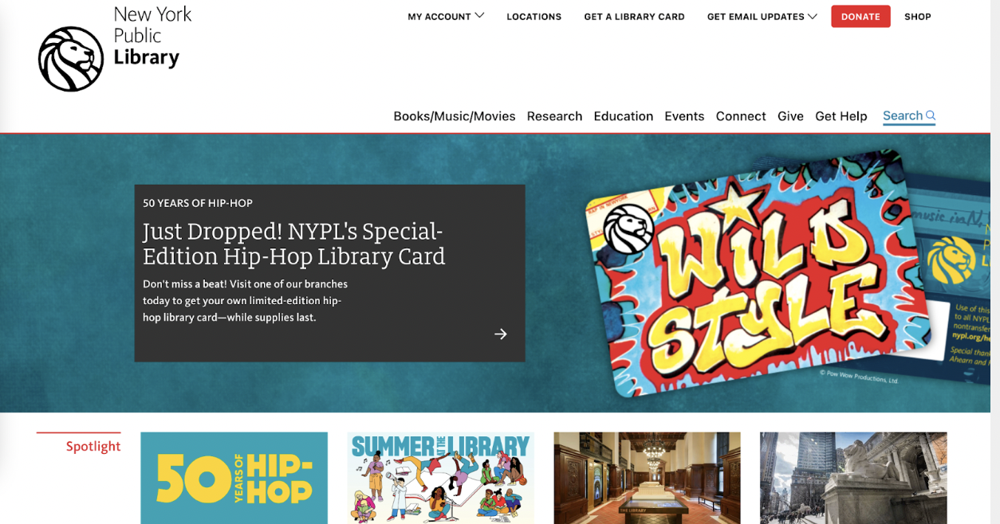
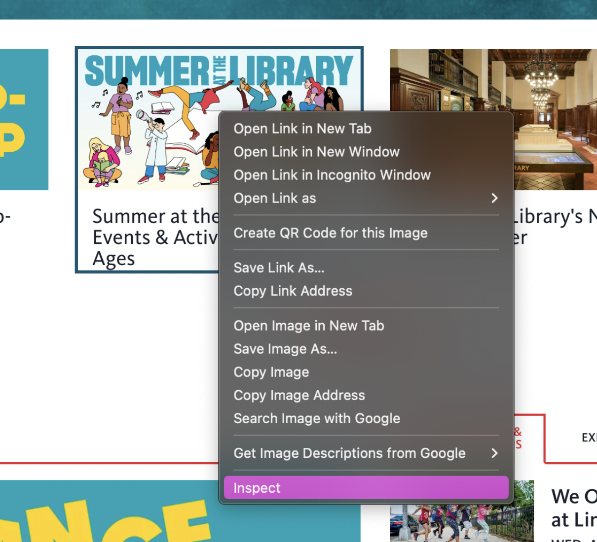
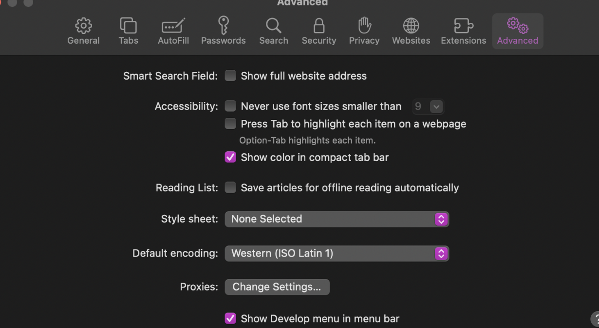
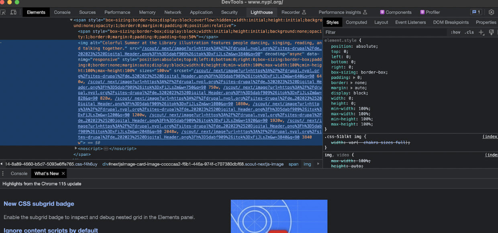
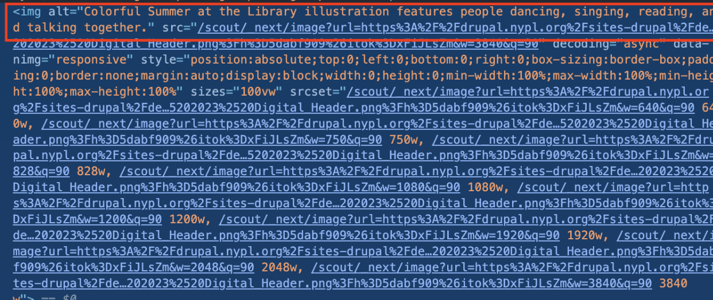

Alt Text Exploration
Read
- Computational Anthropology and Exploring Identity through Artificial Synthesis | by Ari Melenciano -> PDF VERSION
- The umbra of an imago: Writing under control of machine learning - Serpentine Galleries
1. Navigate to any website
2. Right click on an image and select “inspect”
*Please note that if you are using Safari you may need to enable developer tools by going to Safari -> Preferences -> and selecting “Show develop menu in menu bar”:
3. When you click inspect a window should pop up or show up as a side panel.
4. In this window, you should see the html code for the image. See if you can find the alt text. (you may need to try with a few different images and/or websites before you find an example)
5. Take a screenshot of the image and the alt text
6. Do you think this description is sufficient? Write a sentence or two about why or why not.
Instructions for submission
- Submit your screenshot from Part I in the #assignments channel
- Submit your reflection from Part I in the #assignments channel under your image.